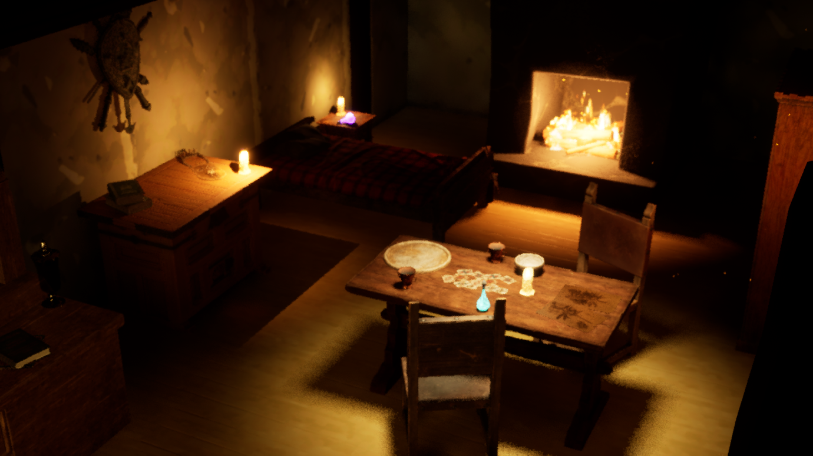

A closer look at the modular action-RPG combat system.
Iron Pillar Studios · Technical Director
Alyria
Combat, reactive AI, and technical direction for a fantasy action RPG. Connected gameplay systems, from equipment crafting to the effects that bring each encounter to life.

58% less memory4.3 GB to 1.8 GB
64% more FPS97 to 159 FPS average
SEE IT IN MOTION
Gameplay & work samples
Melee combos, elemental elixirs, parries, and a boss encounter.
Equipment customization and gear-weaving mechanics.
Defensive states, timing windows, and parry responses.
State-driven enemy AI and behavioral reactions.
Alyria development lab: Armor Short Vid.
Status effects and elemental ability feedback.
Real-time particle and fluid/ripple simulations.
Rendering performance, DLSS integration, and combat feel.
Technical direction, production workflows, and Alyria’s gameplay architecture.